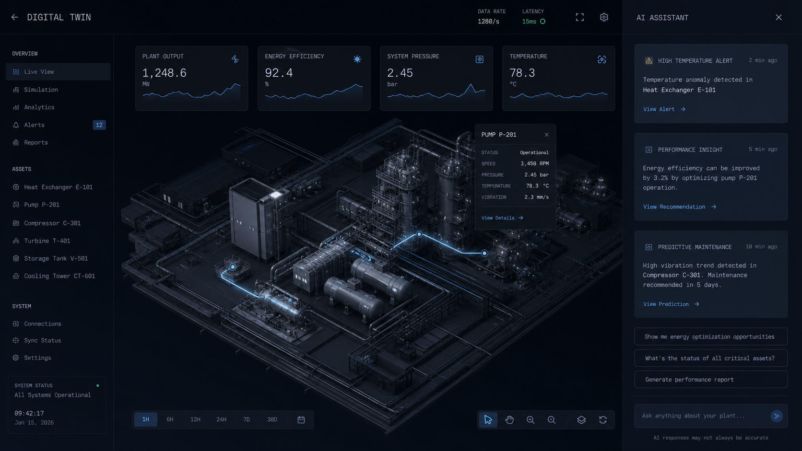
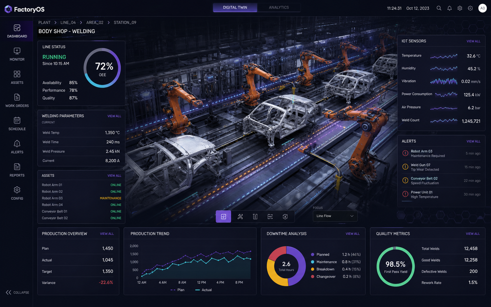
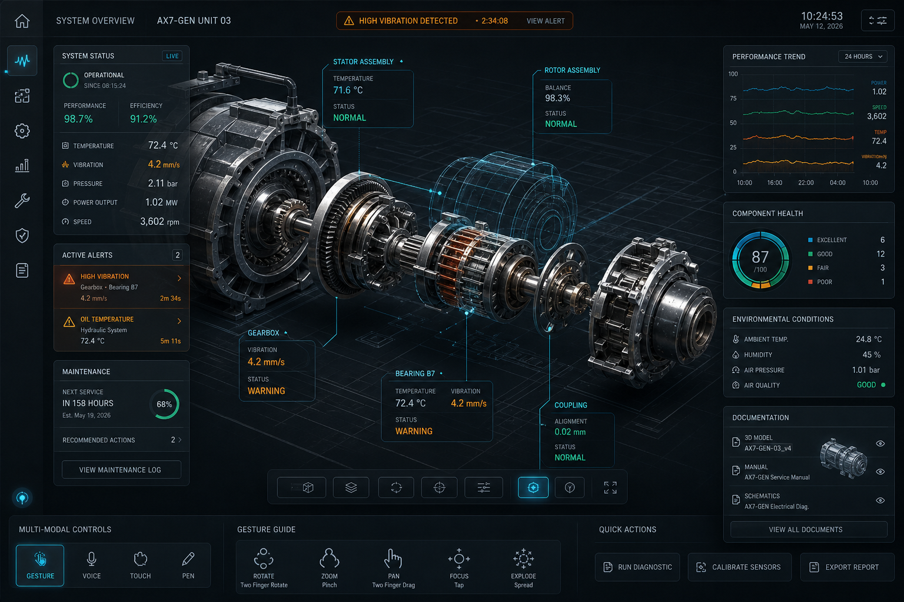
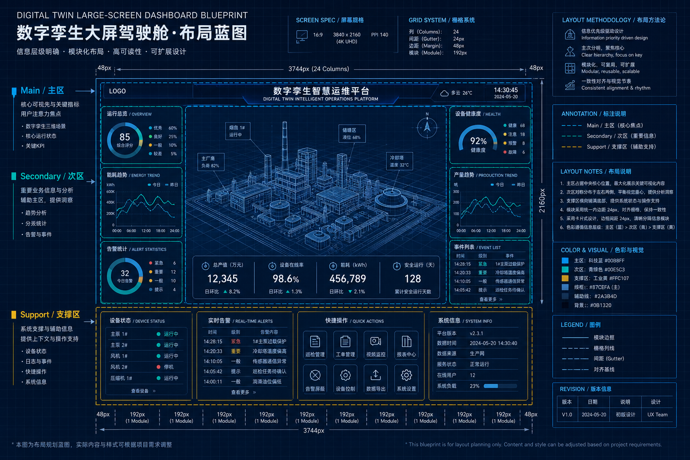
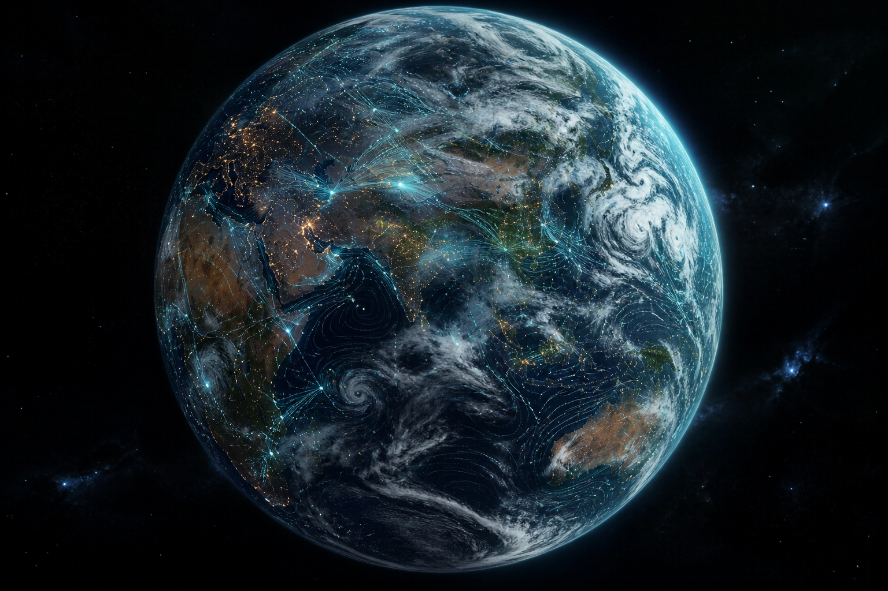
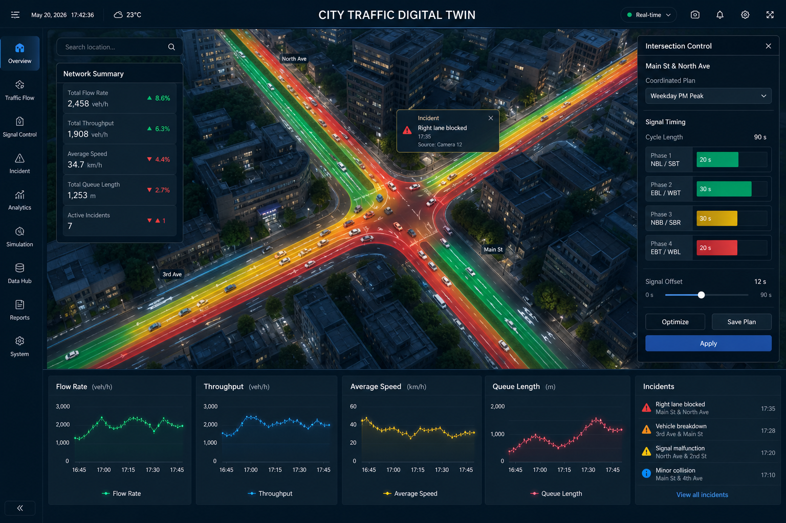
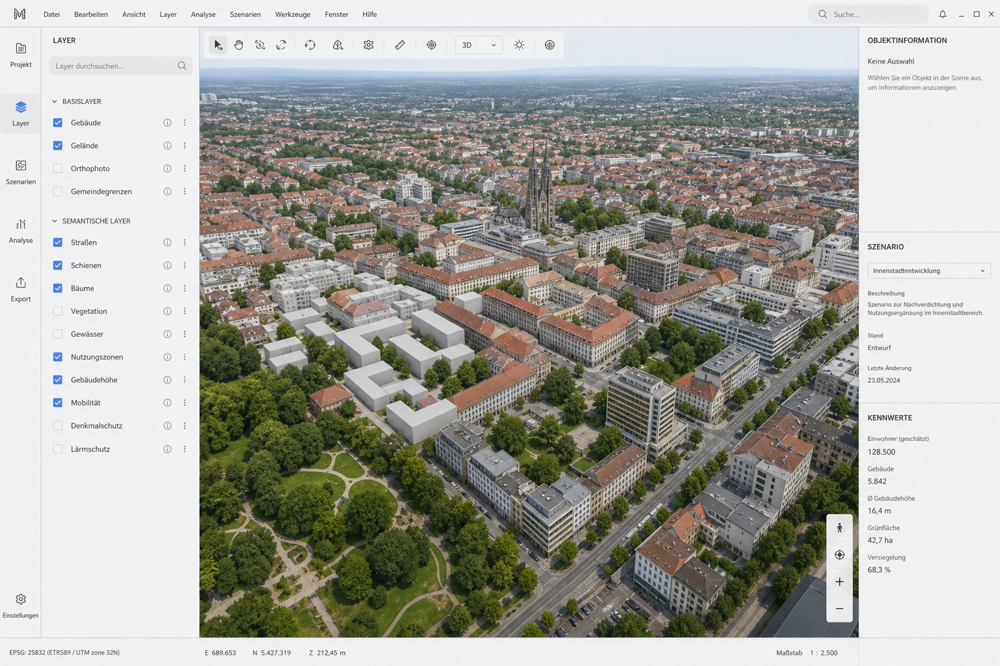
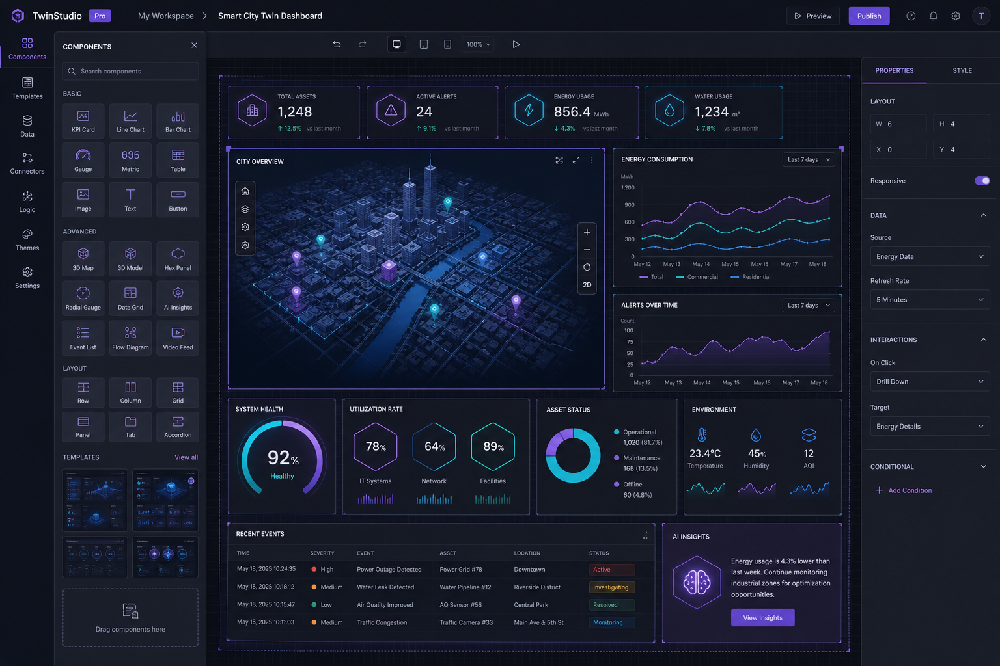
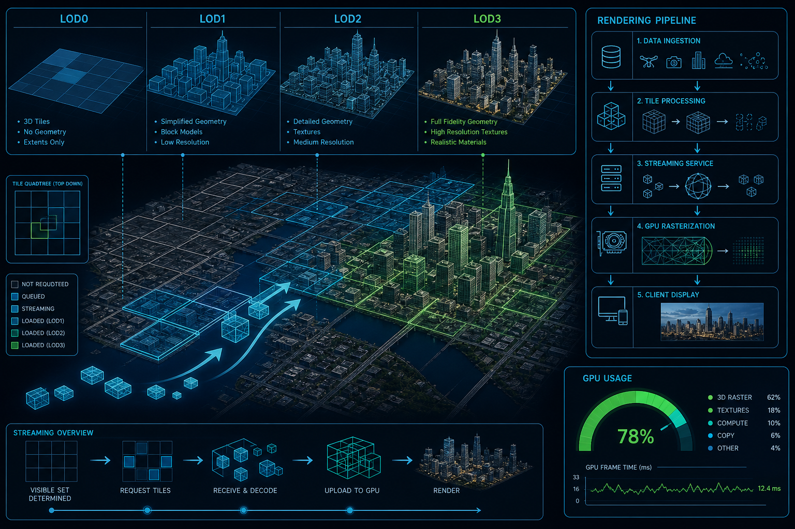

数字孪生视觉设计日报
面向 CIM 底座、工业孪生、智慧大屏与 HMI 沉浸式可视化的最新趋势、代表案例与设计方法论。 本日报聚焦"看得见、看得懂、看得美"的视觉表达，也关注支撑这一切的渲染性能与协同工作流。
2026 视觉主基调：从"炫技"到"叙事"

Tubik、Growth UX Studio、Acme Minds 等团队在 2026 展望中不约而同强调： 数字孪生的视觉设计正在离开"玻璃拟态 + 霓虹发光"的装饰化阶段， 转向"结构清晰 + 有意图动效 + AI 作为侧边协作者"的骨架式表达。
- Purposeful Motion：动效必须解释状态，而不是取悦眼球。
- Signature Clarity：等宽字体、网格作为前景、"线框感"回归主 UI。
- AI in the sidebar：AI 助手不再抢占主流，回到覆盖面板与侧栏。
- Essentialism：整屏叙事式布局在工业与城市大屏中开始流行。
城市数字孪生：CIM 底座的"一屏统览"

凡拓数创（Frontop）为连云港打造的"城市之窗"以超大尺寸 LED 大屏 + FT-E 引擎 呈现政务、经济、民生舆情三大态势；伏锂码云平台则把 倾斜摄影 + BIM + GIS + IoT 融合进统一的城市信息模型（CIM），实现地下管网到城市天际线的可计算三维底座。
- 视觉：深蓝主色 + 冷调发光线框，突出"看得见的城市脉搏"。
- 结构：多屏联动、BOX 沉浸式环幕 + AR 推拉屏三段式体验。
- 关键跨越：从"数字沙盘"→"映射真实、透视现状、模拟未来"的闭环。
工厂数字孪生：从"复刻"到"操控闭环"

易知微 EasyV 的智慧汽车工厂项目接入 IOT 感知、工业监测、GIS 和 BIM 数据， 提供 B/S 与 C/S 双模式的场景虚拟还原 + 实时监控 + 双向控制； 山海鲸的"工厂运营驾驶舱"则以淡紫科技风为基调，把 3D 模型置于主视觉、数据挪至右侧栏， 是当下"少即是多"叙事式大屏的典型体现。
- 色相：紫蓝系降低视觉疲劳，热力/告警用暖色打断节奏。
- 核心变化：孪生体不再是"看的"，而是"能反向下发指令"的操作台。
- 视觉细节：网格地面、辉光边线、扫描线动效——克制且服务于业务。
HMI × 数字孪生：沉浸式实时可视化

UXDivers 提出：2026 的 HMI 已经从"仪表盘上的一块屏"演化为 触觉反馈 + 手势 + 语音 + 数字孪生的多模态协作层。 工业与汽车领域的重点是 Digital Twin expansion——机器内部状态被实时以 3D 呈现， 操作员可以边"看边听边摸"完成故障定位。
- 核心目标：降低"认知负荷"——用户无需离开主视场即可操作。
- 视觉手法：分区状态色 + 微光呼吸 + 极简文字，避免屏幕过载。
- 底层能力：Zero-Trust 安全 + 边缘 AI Agent 内嵌到界面响应链。
大屏设计方法论：主次辅与信息焦点

图扑（Hightopo）在其大屏设计博客中，把方法论拆成两步： 先"理解数据"，再"分层展示"。数据先分类为 分类数据 / 时序数据 / 空间数据 / 仿真孪生四类，再按"主/次/辅"三级把指标写进布局。
- 四问法：拥有什么数据 → 想知道什么 → 用哪种可视化 → 看到了什么？
- 布局原则：先抛核心，再分级下钻；避免观者迷失于信息海。
- 评审 5 项：布局适配 / 数据客观 / 风格一致 / 可开发 / 无色差拉伸。
质感与动效：让画面"活"起来

质感（金属 / 玻璃 / 晶体 / 光效）与动效（关键帧 / 粒子 / 天气 / 水波纹） 是当前工业孪生 3D 场景拉开差距的关键。图扑的 HT 引擎、山海鲸内置的 大气散射 · 体积云 · 高度雾都已默认整合，一键提升视觉层次。
- 用材质：一屏只主打一种"英雄材质"，避免视觉混杂。
- 用动效：动效为状态服务——加载 / 变更 / 告警 / 心跳。
- 用光效：辉光集中在关键指标与交互点，其余保持"暗场"。
智慧交通仪表盘：Cebu Metro 案例

都灵理工的这篇论文把宏观 / 微观交通分析 + 交互驾驶模拟器 + 数字孪生仪表盘 串起来，用来优化 Cebu Metro 的通勤枢纽选址。视觉层面它给出了一个通用范式： 3D 场景铺底 + 实时数据流叠加 + 决策操作条。
- 3D 场景与 GIS 数据同源，管理者可"缩放到街道级"复核决策。
- 把仪表盘视为"决策代理"而非"报表页"——CMC 论文也持同样观点。
- 红/黄/绿三色系可以直接对应"拥堵 / 警戒 / 通畅"的语义色标。
3D 城市模型：欧洲市政孪生实践

对比国内偏"炫技型"路线，欧洲的城市孪生（Bremen 用 VC Planner、Helsinki 走自动化、Wiesbaden 走 热能规划）视觉更"冷静克制"——白灰底 + 单色高亮 + 语义标签。 设计目标不是震撼观感，而是让规划师、GIS 专家和市政 IT 团队都能"读懂"。
- 色板：低饱和度 + 强对比度重点色，方便在会议室大屏辨识。
- 信息层次：以"可选图层 + 语义卡片"替代整屏堆叠指标。
- 设计价值观：规划成果的可传达性 > 视觉冲击。
组件生态：低代码大屏与素材库

当"数字孪生 UI"已经变成一种可复用的视觉语言，配套的组件模板与素材市场 正在快速沉淀：即时设计（js.design）有大量社区大屏模板，山海鲸内置 1000+ 3D 模型素材， 优锘 ThingJS-X 提供零代码的孪生交付，图观内置流渲染样机。
- 模板类别：科技边框 / 数据卡片 / 3D 城市 / 工业组态 / 图表 UI Kit。
- 取舍：先套模板保 80% 的完成度，重点资源花在关键场景 3D 建模。
- 坑：模板堆砌 ≠ 好设计，仍需回归"主次辅"信息层次校准。
性能底盘：LOD · 云渲染 · 流式加载

再"好看"的视觉，如果不能在浏览器里流畅跑起来就等于零。 伏锂码云平台在挑战篇里点出三件事必须齐活——多层次 LOD、 云渲染与流式加载、以及轻量化终端渲染，才能在 Web/移动端还能保住视觉效果。
- LOD：远景合并、近景走高精，配合"视锥剔除 + 实例化"提速。
- 云渲染：把重场景放到 GPU 服务器，客户端只收视频流。
- 低代码：让业务方自己配场景，减少"视觉一次性交付"的死代码。